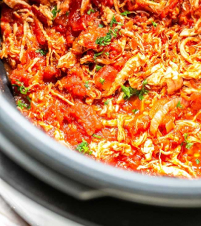

Easy Shredded Chicken Tacos

Description
Who doesn't love tacos? Get ready to arm yourself with this new family favorite recipes, because everyone will be coming back
for seconds! This meal is great for anytime of the week, or you can even make them for yourself!
Estimated Times
- Prep: 15 mins
- Cook: 40 mins
- Total: 55 mins
- Servings: 8
Ingredients
- ¼ cup water
- 1 (1 ounce) packet taco seasoning mix
- 2 (8 ounce) cans tomato sauce
- 2 teaspoons white distilled vinegar
- 2 teaspoons minced garlic
- 2 teaspoons ground oregano
- 1 teaspoon ground cumin
- ½ teaspoon white sugar
- 2 tablespoons olive oil
- 2 pounds skinless, boneless chicken breasts
- 8 taco shells, warmed
Directions
- Mix water and taco seasoning in a large bowl. Add tomato sauce, vinegar, garlic, oregano, cumin, and sugar; mix well.
-
Heat oil in a large skillet over medium-high heat. Add chicken and cook until golden brown, about 5 minutes per side.
Add tomato sauce mixture and bring to a boil. Reduce heat to medium-low, cover, and simmer until chicken is no longer pink in
the center and the juices run clear, about 20 minutes. An instant-read thermometer inserted into the center should read at least 165
degrees F (74 degrees C).
-
Remove chicken breasts from the pan and shred meat with 2 forks when cool enough to handle. Return shredded chicken to the pan with
the tomato sauce. Cook and stir until chicken is coated with sauce and sauce reduces a bit, about 5 minutes.
-
Transfer chicken and sauce to a serving bowl and spoon onto taco shells.
View more Recipes